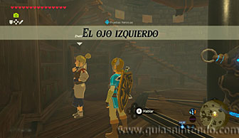
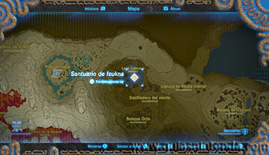
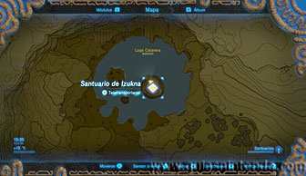
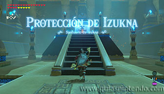
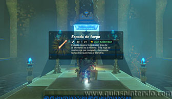

Este santuario está disponible desde que llegas a la región de la torre de Akkala, aunque para desbloquear la entrada necesitas completar la Prueba heroica: El ojo izquierdo. Esta prueba se activa cuando hablas con Zheline, la ayudante de Rotver en el laboratorio de Akkala. Tendrás que haber hablado primero con Rotver y haberle demostrado que eres el auténtico héroe.

Después debes encontrar la entrada al santuario para completar la prueba. Ve al noreste de la Montaña de la Muerte y encontrarás un lago con forma de calavera. El santuario está en lo que sería el ojo derecho de la calavera que es un gran pilar (en el izquierdo es donde encuentras por primera vez a Kilton). Para llegar a él salta desde el lugar más alto del lago y planea hacia él, si no llegas hasta arriba siempre podrás escalar el pilar. Al llegar arriba completarás la prueba heroica.

Dentro podrás abrir el cofre que contiene una Espada de fuego. Después dirígete al altar para conseguir el símbolo de valía correspondiente.
